Traveling to the far side of the world felt like it took longer than “Round the World in 80 Days”: As someone who isn’t the biggest fan of flying (apparently wanting to open a window for some fresh air “Isn’t a good idea”), this trip seemed to take longer than the alleged 30 hours my plane ticket says it did. I think during all the date- and time-zone changes, about a week of my life is still unaccounted for. We flew from PIttsburgh to Phoenix, and then to Los Angeles, where we made a stop in the lounge to have a drink and some dinner. Luckily Zannah, my wonderful girlfriend and travel companion on this adventure, had managed to get us upgraded to business class. This was greatly appreciated on the 17 hour flight from LAX to Sydney. The flight was smooth, and being able to lay down certainly made it more comfortable. Nevertheless, I was still very happy when I saw land appear again as we began our descent. We landed in Sydney, I got to cross off another continent from the list of ones I had not yet visited, and the adventure truly began.
We left the airport and hailed a cab to take us to our hotel (it was not until later we learned about the convenient train that could have taken us for far cheaper, and avoided all the traffic). We checked into the hotel and dropped our bags in the room and showered. We wanted to do some exploring in and around Sydney, and replace my carry on bag that had ripped while carrying it through LAX. We grabbed a quick lunch and took a double decker bus North towards Palm Beach and Governor Phillip Park, with the Barrenjoey Lighthouse. We got off the bus near the park, and walked along the beach towards the northern tip of the point, where the lighthouse sat on top of the hill. We hiked up and around, and enjoyed being able to move about after being on a plane for 2 days. We stopped at a small Fish and Chips shop on the way back for some food, and then took a bus to the Manly Wharf, where we took the ferry back to our hotel on Circular Quay. The ferry took us past the Sydney Opera House, and under the Bay Bridge. We made it back and had a quick dinner in the outdoor market at Belles Hot Chicken (it was fantastic) before heading to bed.
We woke up and had a delicious breakfast at the hotel, before heading to the Westfield Mall to look for a new bag for me. I found a nice goatskin leather bag, and got to enjoy a very favorable exchange rate while purchasing it. We walked along the outdoor market at the wharf to find somewhere to have lunch. We settled on The Meat District because they had kangaroo on the menu and I wanted to try it (it tasted very similar to beef honestly). After lunch I needed a nap, as I still was not fully adjusted to the 16 hour time change, and we had evening plans. So, we headed back to the hotel for a while. We then walked around Sydney to the Botanical Gardens before getting ready for our show at the Sydney Opera House. We had purchased tickets to a play called “Assassins” at The Playhouse in the Sydney Opera House. We took a few pictures while there, and then headed in to see the show. It was a comical recounting of all the assassinations and attempted assassinations of U.S. presidents. We enjoyed it, but we were very tired after (and maybe a little during) the show, so we then headed back to the hotel for bed.

We woke up early, and finished packing and showered before grabbing boxed breakfasts from the hotel lobby. Now a little smarter, we took the train back to the airport, where we took advantage of Zannah’s travel card and status to have a second complimentary breakfast. There were several delays, but we finally boarded Air New Zealand for Auckland. We arrived, and grabbed the rental car (I got stuck learning to drive on the wrong side of the car in the rain), and headed to the hotel. We checked in and asked about dinner recommendations. Shockingly, they actually suggested Joe’s Crab Shack. But we decided that we didn’t want something we could have anytime back in Pittsburgh, so we chose Dr. Rudi’s Rooftop Brewery. We had a delicious dinner before heading back to the hotel to get our bearings and go to sleep.
Zannah woke up very excited, since we were heading to Hobbiton today to explore the set of where The Lord of the Rings and the Hobbit were filmed. It was a really cool experience. Since most of the movies used practical effects, there was a lot to actually see. I definitely think anyone who is a fan should check it out. After we finished our tour of Hobbiton, we headed to Rotorua for lunch at the Pig Whistle and to stretch our legs. We dipped our feet into some of the hot springs there and then headed to the “Buried Village”. It was a small settlement that was overcome by a volcanic eruption in 1886 (the same eruption also destroyed the white terraces, a former Natural Wonder in New Zealand). The village has been partially excavated and has some hiking trails around, so we hiked and explored until it began to get dark. We then headed to the overlook, to see the volcano responsible for the destruction, before heading on to the hotel in Lake Taupo.


 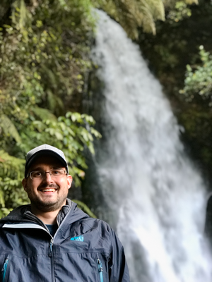
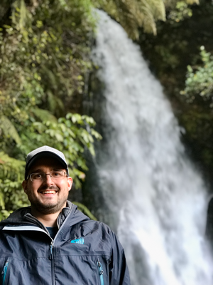

Woke up and had breakfast at the hotel, and received a few recommendations from the staff as far as things to do in Lake Taupo. They suggested Huka falls and the water release at Aratiatia Dam. We made our way to the falls first, but heavy fog limited visibility. Not letting this one setback stop us, we went to check out the water release. We are so glad we did! They open the flood gates several times a day at the dam and release an impressive amount of water. As engineers, we enjoyed it. We then drove down towards Mt. Tongariro National Park to do some hiking on a volcano. The hike was incredible. It started in an almost temperate rainforest at the base of the volcano before the trail wound its way upward. As as it did, the rainforest gave way to scraggly underbrush, and then to more open and treeless grasslands. Finally, we climbed above all the plants, and continued hiking through a very rocky and snow covered terrain. During all of this, my watch told me it recorded the equivalent of walking up 185 flights of stairs. We eventually reached a point where we needed to turn back in order to make it back to the car before dark. If I were to go back, I think I would attempt to do the entire Alpine Crossing track. After we made it back to the car, we began the long drive down to Wellington. We arrived at the hotel late and exhausted, and headed straight to bed.

 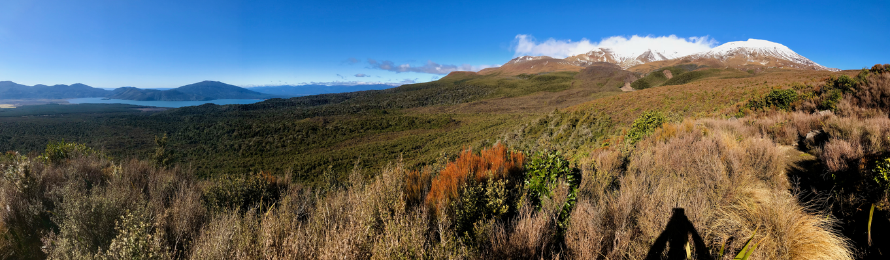
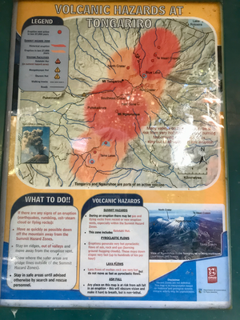
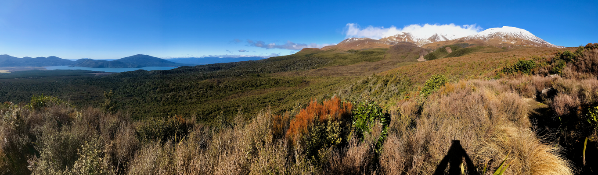
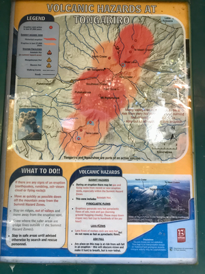
We were up early to return the rental car, and board the ferry, which was huge. The Cook Strait crossing takes several hours, but the ferry had lots of options. We had breakfast and coffee, and explored the boat. We spent some time outside looking at the spectacular views, but were forced indoors several times due to very strong winds. The ferry crossed the open strait, and then wound its way between islands and small fingers of land to Picton. Once there, we picked up our new rental car and headed towards Greymouth on the West coast, where we would be staying that evening. We rented an AirBnB, which was actually a tiny house! Our host, Joy, had the tiny house in her backyard. She was very nice and offered to do our laundry for us. Our tiny house was was very clean and cozy, and there was a loaf of fresh homemade bread and some jams waiting for us. We chatted with Joy and she recommended a place in town for dinner, where we went and then returned and headed to bed.


 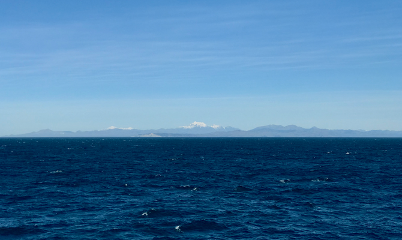
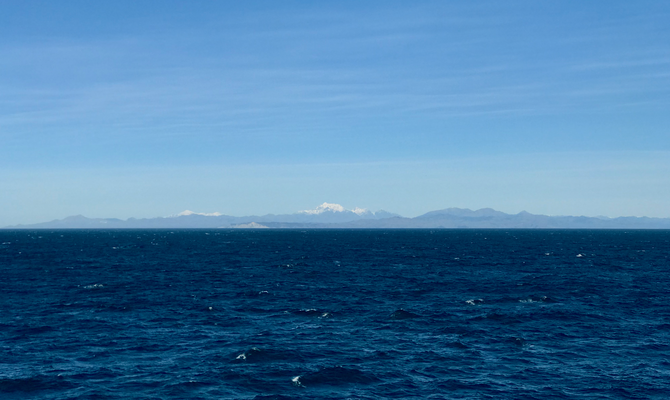
&We woke up to clean clothes and the sound of Joy feeding her sheep and chickens. We headed into town for a quick breakfast, and then began the long and scenic drive across the Southern Alps to Christchurch via Arthur’s Pass. It was a beautiful drive, winding up and through the mountains, with several great photo opportunities. Along the way, we stopped at the Otira Viaduct and saw several Keas. The Kea is the only alpine parrot in the world and it is nearly extinct. We then stopped at the Otira Valley track, hiked up the valley for a bit, and took in some more spectacular views before continuing on our way. Our next stop was at the Devil’s Punchbowl waterfall for another quick hike, and even more views. We continued on our way, and finally arrived in Christchurch, where we checked into the hotel and headed to dinner. We headed back to the hotel and off to bed.
 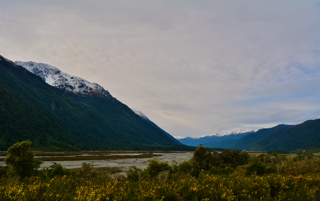
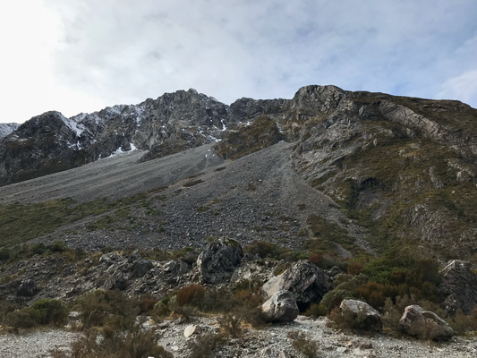
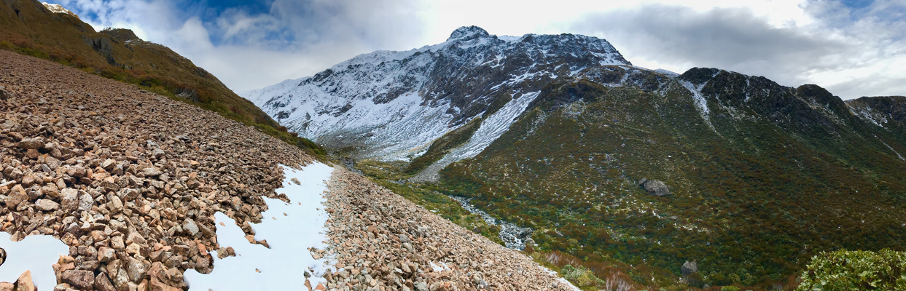
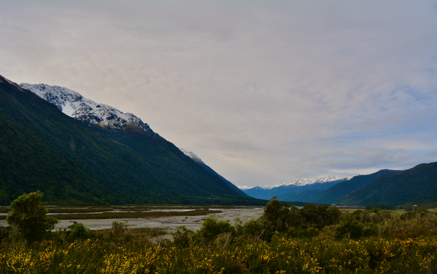
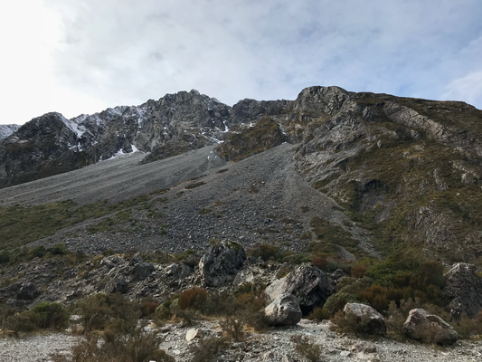
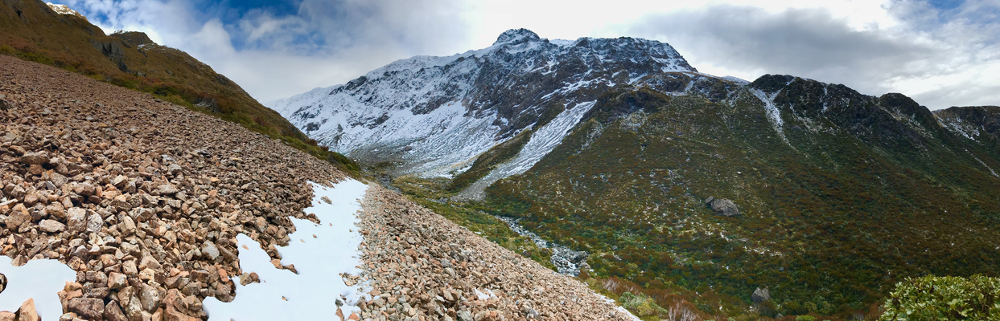


 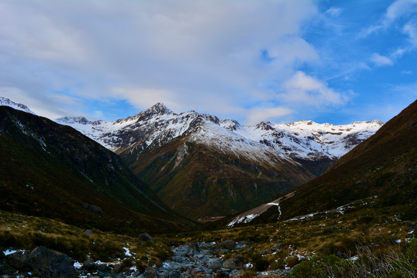
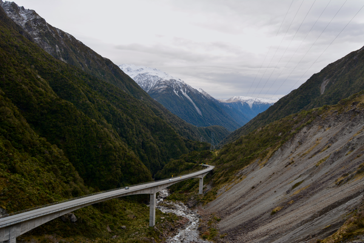
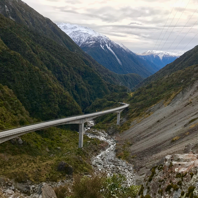
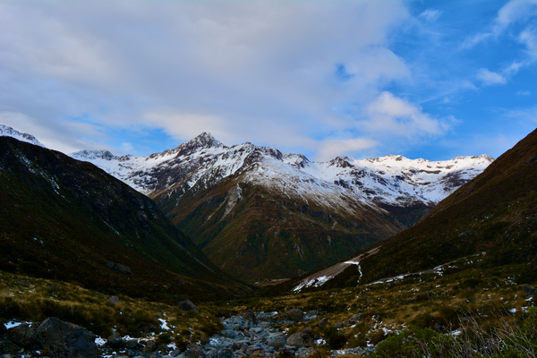
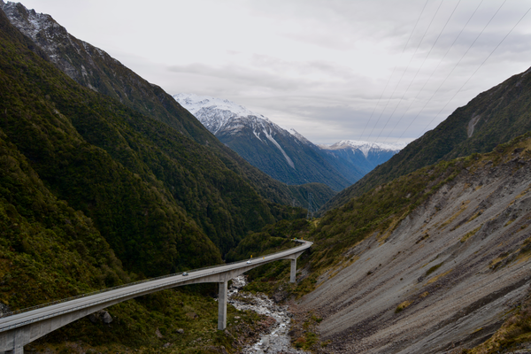
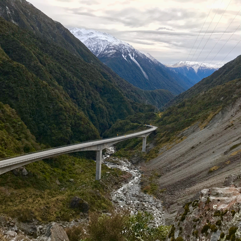
 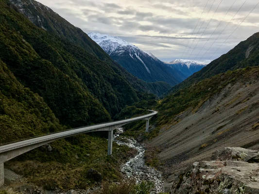
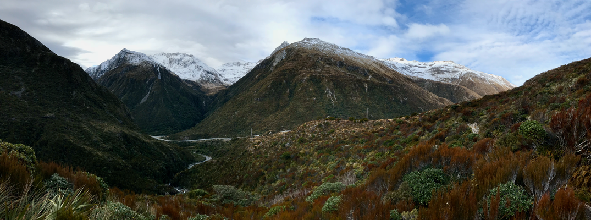
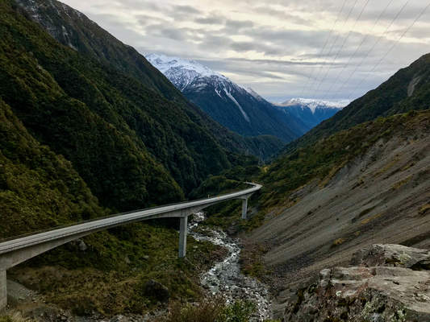
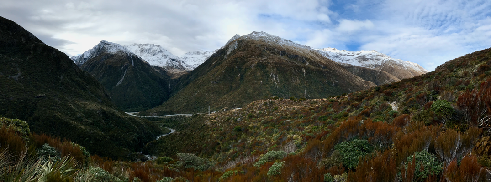
 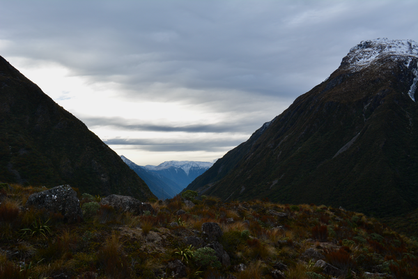
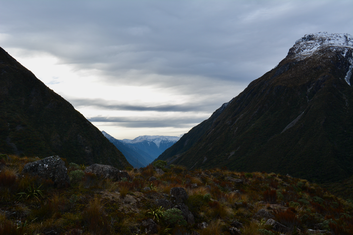

 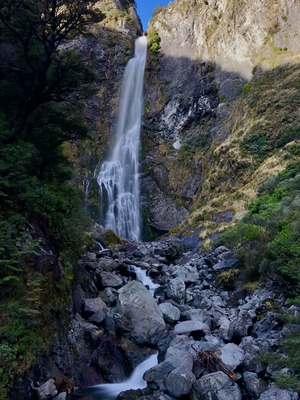
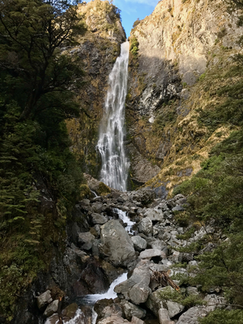
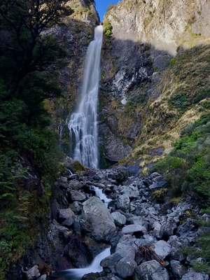
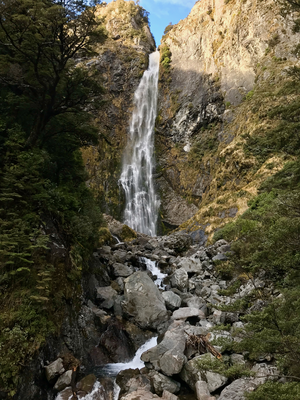


 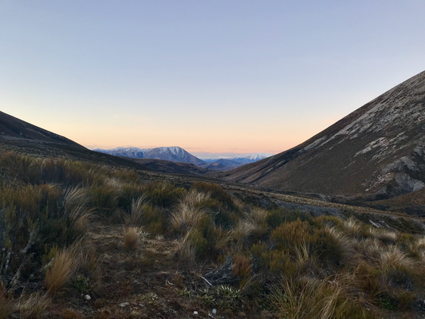
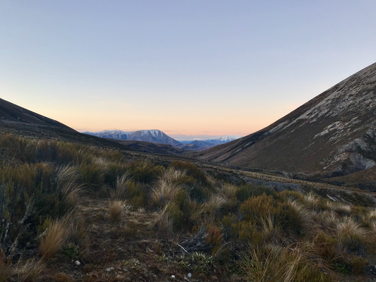
We were up and out early today, so we could go and look for penguins around Robinson’s Bay and Akaroa. The drive isn’t far, but it covers some of the steepest and twistiest roads I have ever driven on. As we made our way around the bay into Akaroa, we stopped along the beach and talked a couple collecting seaweed for their garden. We asked then if they knew where we might find the penguins and they suggested Flea Bay, so we looked it up on the map and headed that way. The drive was gorgeous, and only slightly reminded me that I am still in fact, slightly afraid of heights. The road turned to gravel and narrowed as we got closer to our destination, until it suddenly ended at a gate. The sign said it was closed for the season. Zannah was not pleased to miss the penguins, and I was unhappy about having to reverse back up the steep, narrow, and winding road. I eventually found a spot to turn around and we stopped to regroup and come up with a new plan. We had passed several forks in the road, and so now we looked at the map to see if any of them showed more promise. We decided on one of the nearby bays that showed the road continuing all the way to the sea. We drove over towards it, and the road seemed to pass right through a farm. We were worried we were driving up someone's driveway, until we saw signs and a carpark next to a small trailhead sign. We parked and realized the trail set off through a sheep pasture, with a gate and sign, asking everyone to make sure they closed the gate behind them. The trail wound down past a small lighthouse, with some explanatory information. After reading the placard, we set off down a set of tracks towards the small cove, and had a few sheep companions walking with us. The trail kept winding down and around the hillside. It was quite muddy, until we reached the end of the trail. It was so beautiful, we stayed for a while and took pictures and kept looking for penguins. We still did not see any penguins, so we began to walk all the way up the hill, back to the car. We drove back through Akaroa, and stopped for some fresh fish and chips, before continuing back to the hotel in Christchurch. When we made it back and I began doing more research to find Zannah penguins. We found out about a nature preserve in Dunedin that did twilight penguin tours. So we decided to revise the plans for the following day, to make time for that.

We were up and early again, to begin the long drive to Dunedin. Our plan for today had been to head to Twizel and do the Hooker Valley Track towards Mt. Cook, but Dunedin was going to take up most of the day. I wasn’t completely upset about this, as Dunedin has another interesting feature. Depending on how you define the word “street,” the steepest street in the world is either Canton Ave, in Pittsburgh (which I have been to), or Baldwin St, in Dunedin, NZ. When we made it down we headed straight to Baldwin St. The signs indicate that there is no turn around at the top, and should only be driven up by non-residents (grrrrrrrrrrrrrrrr). The street is certainly steep, and in my opinion, is more deserving than Canton Ave of the title. It was kind of cool in a nerdy way and I am glad that I have had the chance to see both of the steepest streets in the world. We then made our way to the Royal Albatross Centre, to hopefully finally find some penguins! The drive was another beautiful but twisty road along the coast, out to the very tip of the peninsula. When we arrived, we ventured inside and sought the information desk. They explained the guided tours, and we realized that this was how New Zealand handled wildlife conservation. They let companies manage the wildlife and its habitat, and earn money from visitors to continue operate. Personally I think they do this very well, and I think the Royal Albatross Center is a great example. We signed up for a combo package of tours: the guided tour to see the baby albatrosses (and maybe the parents), followed by the disappearing gun, and finally the penguins after dark. Our tickets were glow in the dark green wrist bands, I still wear mine today. We had a little time to kill before the tours began, so we wandered through the gift shop and bought some penguin related souvenirs, and a basket of fries to snack on. The tour began by taking us into a small theater and explaining the geography and history of the little peninsula we were on, as well as how and why the albatross came to nest here. After that, we went up the hill and into the underground viewing point. There were several chicks sitting in the nests! Our guide explained that at this point, the parents only come back once every few days to feed the chicks since they were getting close to leaving on their own. We were fortunate enough to actually see 2 of the parents fly in and land. They are huge and not very graceful, with wingspans of over 10 feet. They chose the peninsula because it is shaped in such a way that they can always takeoff downhill into the wind, and land (more like crash land) into the wind. The underground viewing point was part of an old fort used to protect New Zealand from invasion, and included the big disappearing gun. It is a rather ingenious solution: mounting what is essentially a cannon, on a hydraulic platform that can be raised above ground to fire, before dropping back out of sight. We moved throughout the system of tunnels to see more of the fort and more of the albatrosses before heading back down to the main building to wait for dusk. Once it began to get dark, we headed down the walkway to the beach. The center has installed raised platforms with backlighting to allow optimal penguin viewing. These are the Blue Penguins, and they are the smallest species of penguin in the world. We waited quietly, until they began emerging from the ocean in small groups. They would walk up the beach, under the platforms, and continue into the grassy hillside where their burrows are. This went on for a while and we got lots of pictures, until they turned the lights off. That was when we noticed the stars. It was unbelievable to look up and see them all, so clearly. We still had a long drive to the overnight spot, in Twizel, so we got going. Twizel is away from the coast, in the Southern Alps, and is also in one of the dark skies preserves. That means there is relatively little light pollution, making it a perfect spot to see the stars. When we got to the cabin we were staying at, Zannah was a good sport and agreed to come outside and take pictures of the sky, even though it was freezing cold. We finally went to bed late that evening.


 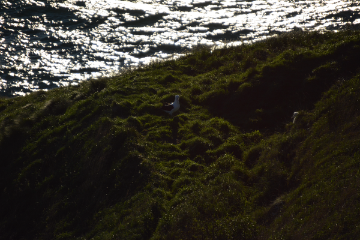
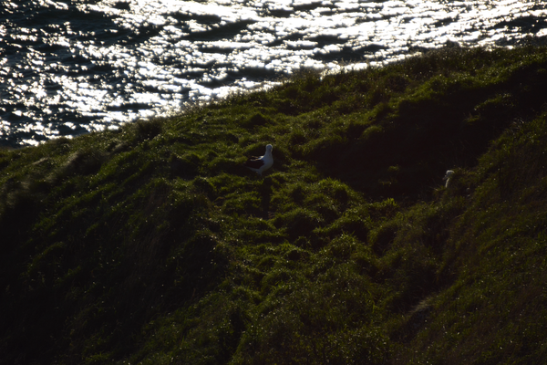
 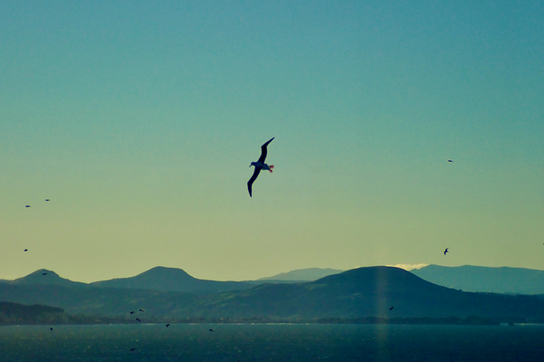
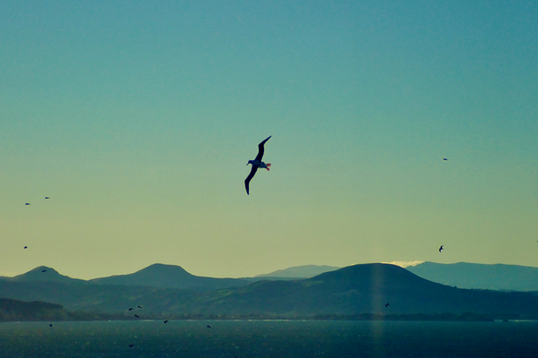

 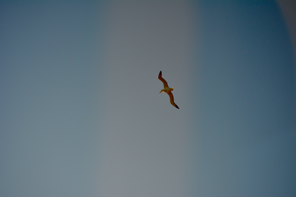
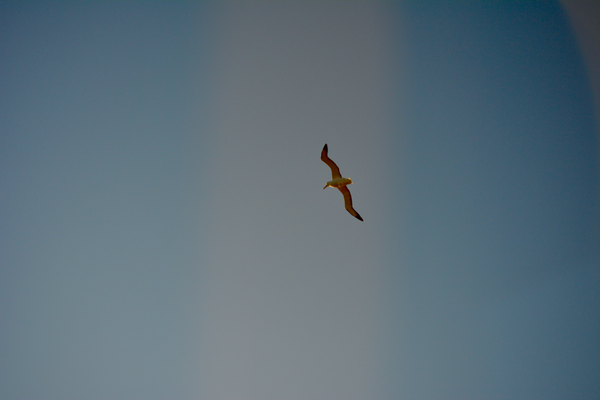
 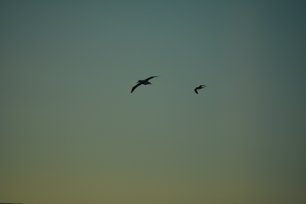
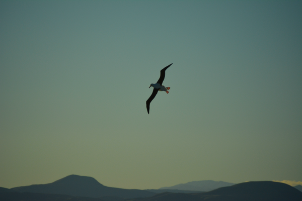
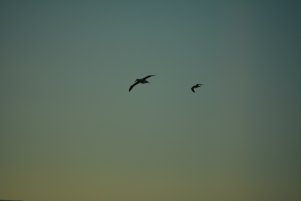
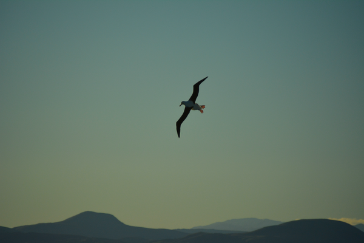
 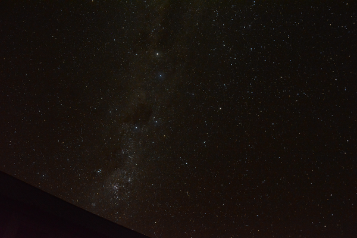
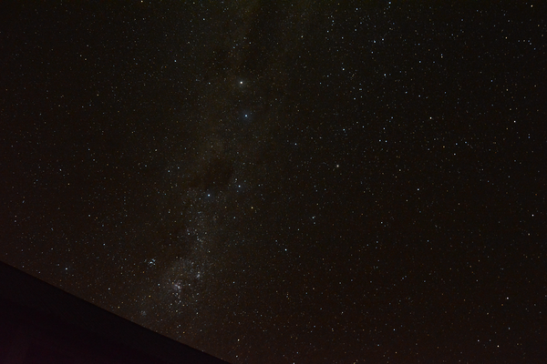
 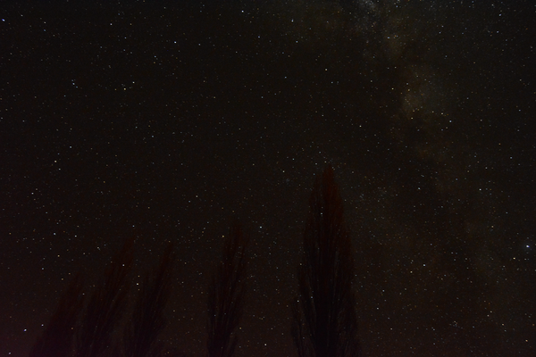
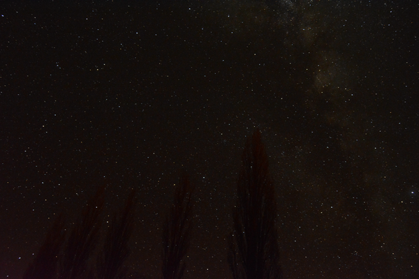
 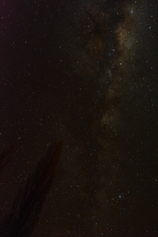
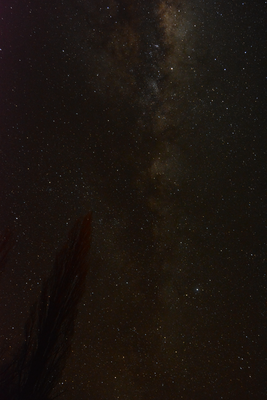
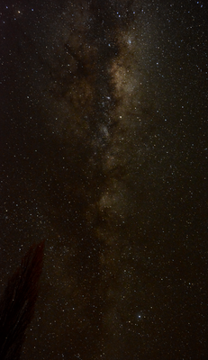
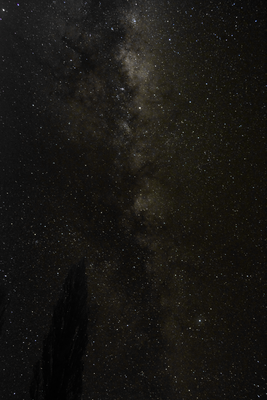
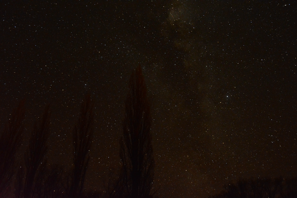
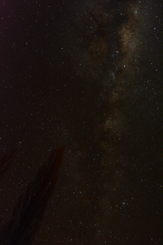
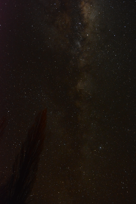
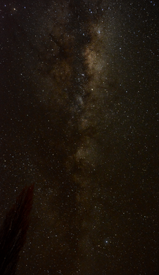
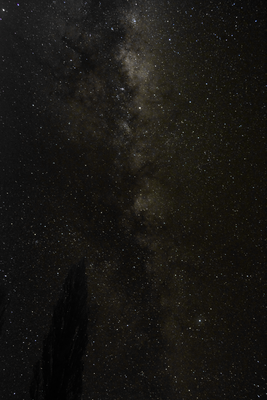
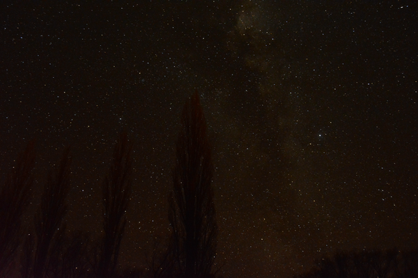
 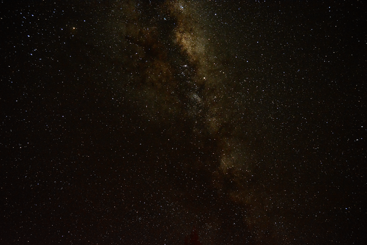
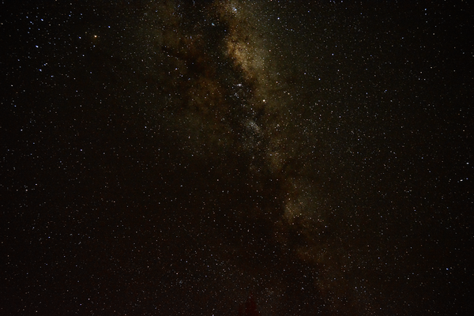

We woke up to foggy and rainy conditions, not ideal for the hike we had planned. We went into town and got breakfast, and then began to drive further into the mountains towards the Hooker Valley Track. The drive was incredible, we drove along a lake full of erie blue water. I think the color came from the minerals and low oxygen content. We passed fields of mountain lilac, the Sir Edmund Hillary Alpine Centre, and more beautiful scenery. When we arrived at the start of the track, it was still foggy, raining, windy, and cold. We decided to do the hike regardless, so we layered up and headed off. The hike was fun, but we were quickly soaked through and freezing cold. Every time we came to a bridge, and heard the thunder echoing in the valley, we walked a little quicker. We did make it all the way to the end, where you can look out across the lake and see the glacier coming down from Mt. Cook. Unfortunately, all we saw was fog. This is another place I would like to do again if I ever go back to New Zealand. We headed back, dried off, and changed into fresh clothes so we could begin to warm up. We then got back in the car and began the drive to Queenstown, where we arrived after dark. We hung our clothes up to dry and went to dinner, before turning in to bed.
 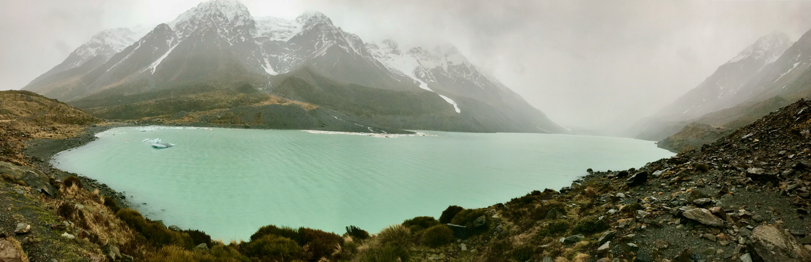
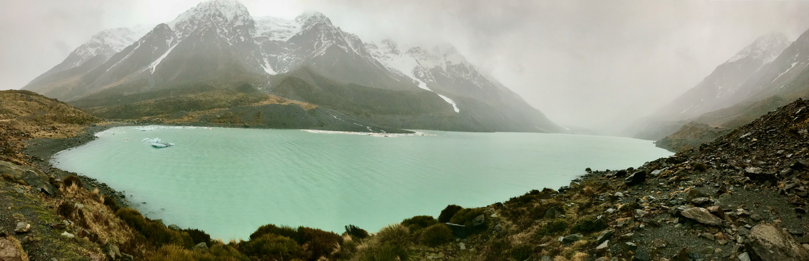

We had a very slow morning, and spent a lot of time using the hotel hair dryer, trying to dry out our shoes. We made our way over to the gondola to head up the mountain. It was raining in Queenstown, but halfway up the mountain it switched to snow, and we could see all the ski resorts. At the top we got out and explored a bit, before sitting down to decide what we wanted to do next. We decided since a lot of our hiking gear was still wet, we would instead look to go for a drive. We saw the weather forecast showed that Milford Sound would be clear for sunset, so that was where we decided to go. Milford Sound is relatively close to Queenstown (~40 miles in a straight line), but the road winds its way out around the mountains so to drive it is almost 180 miles. It was another beautiful drive, and we stopped several times to take pictures along the way. Since we stopped along the way, we were in a slight rush to get to Milford Sound in time. Unfortunately, this is when we learned that speed limits in New Zealand are actual limits. I came home with a souvenir I had not intended to get, a speeding ticket. We finally arrived at Milford Sound just a few minutes before sunset. To get to the sound, you have to drive through a 1-lane tunnel through a mountain, and the sound opens up in front of you. It was incredible. We walked around a bit and looked for the best place to get pictures of the scenery. Watching the sunset there was awesome, and we got several fantastic pictures of it. After the sunset, we headed back to the hotel for bed, stopping for dinner on the way.

 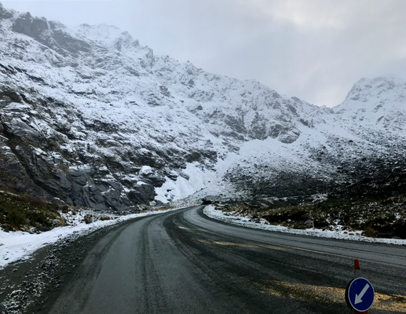
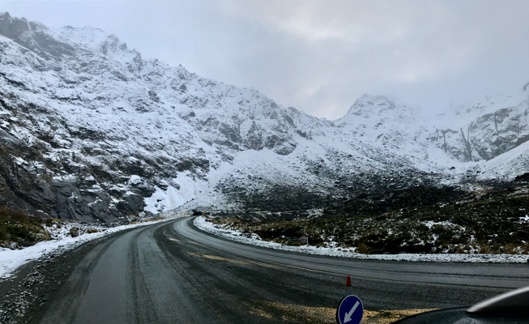
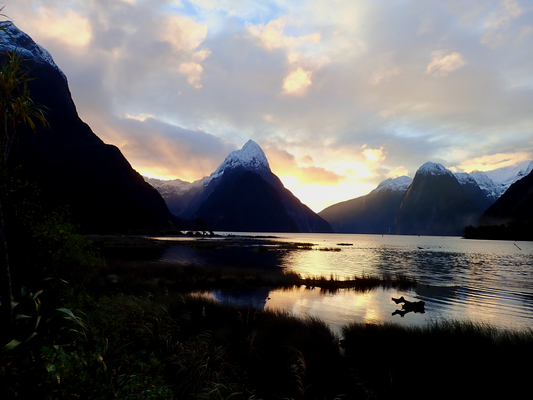
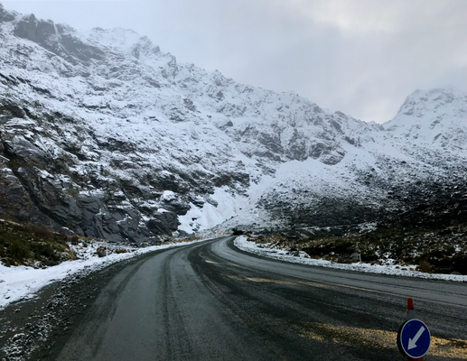
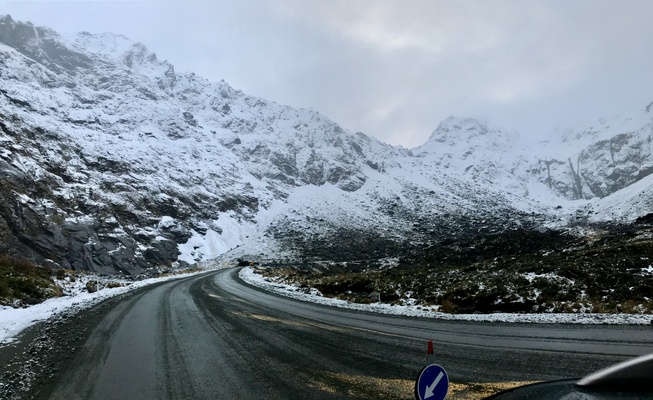
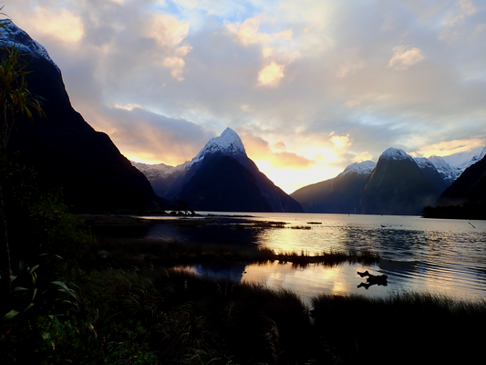
 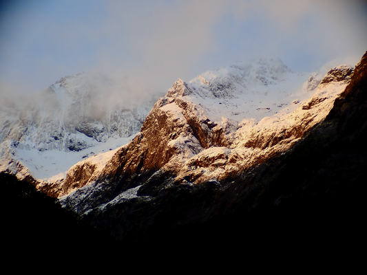
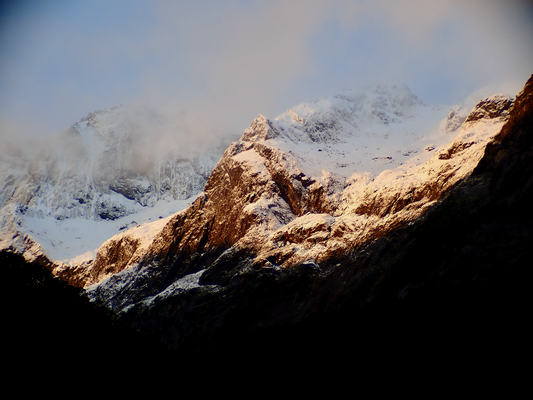

.png) 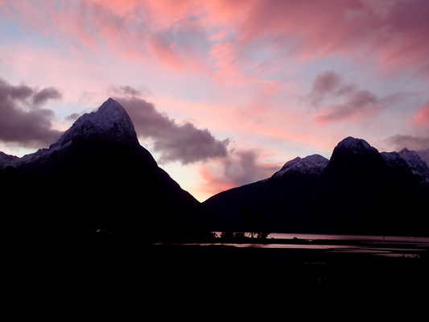
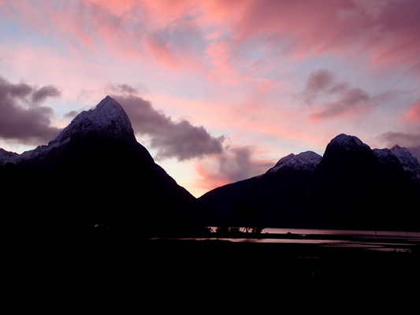


 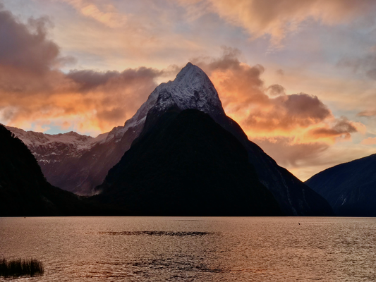
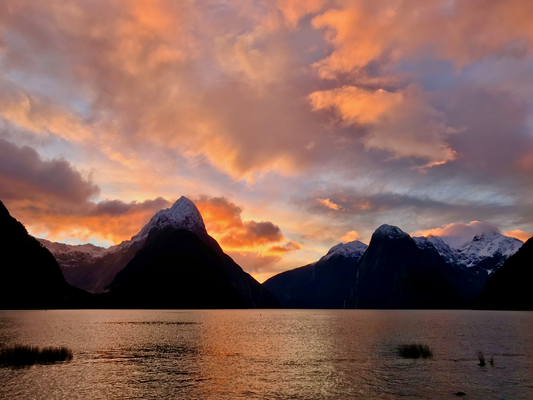
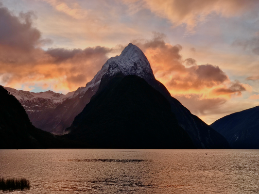
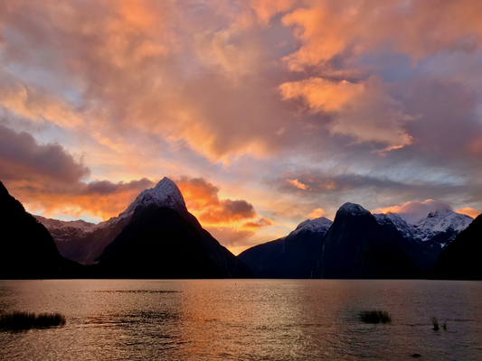


We were up and out early, we had several things we wanted to do before heading to the airport. We set off for Wanaka, to see the Wanaka tree in the lake via Crown Range road. The road wound up through the mountains, and was very icy, but the scenery was beautiful. We arrived in Wanaka, and found the tree growing out in the lake with a beautiful mountain backdrop. We grabbed a few pictures and went to find some lunch and headed back towards Queenstown. We dropped off the car and got checked in for our flight, then headed to the lounge. The flight back to Sydney went smoothly, and we took the train back to our hotel. We arrived to find they had upgraded us to a suite. We had a final meal at Belle’s Hot Chicken and headed to bed.


 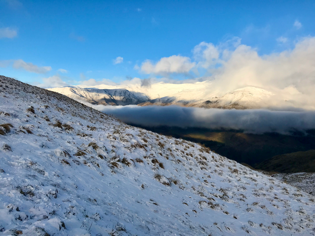
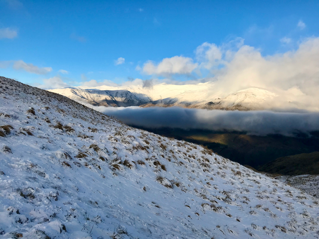
 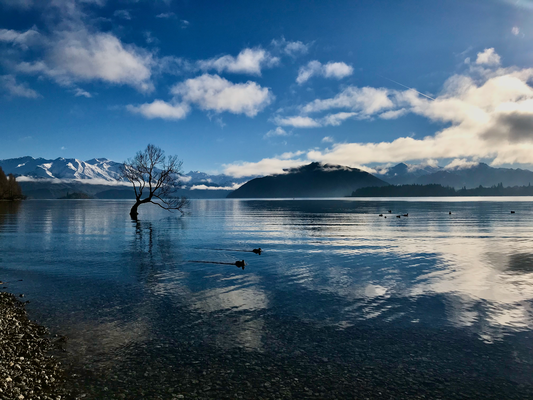
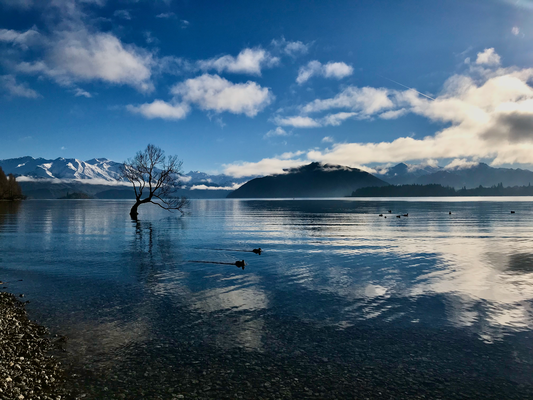

We were up and out, heading back to the airport to begin the long journey home. Luckily we were upgraded again to business class for the long flight from Sydney to LA. We landed in LA 3 hours before our flight left Sydney, you have got to love the international date line! We were time travelers. We went through customs before once again taking advantage of Zannah’s travel perks by heading to the lounge to shower. The shower was a great way to make me feel more human after so much time on a plane. Then we flew to Chicago, and were upgraded again for the final flight into Pittsburgh (all 51 minutes of it). Then we were home. It was a great trip!